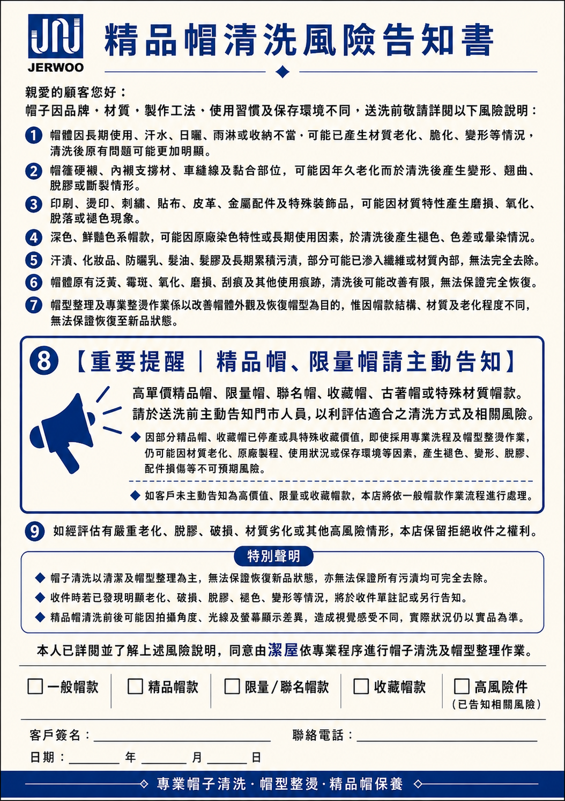
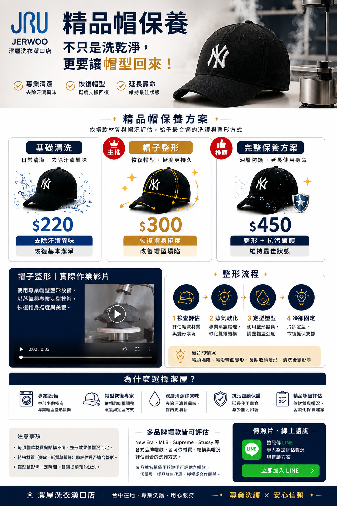

基礎清洗
$220
日常清潔，恢復基本潔淨。
- 去除日常汗漬與異味
- 表面與內側清潔
- 適合帽型狀況良好者
依帽況選擇，實際處理方式仍以現場評估為準。
日常清潔，恢復基本潔淨。
針對帽身挺度與帽型塌陷整理。
清潔、整形與抗污保護一次完成。
※ 特殊材質、飾件、既有損傷或重度污漬，需依實際帽況評估；處理效果無法保證完全恢復至新品狀態。
帽型變形後往往很難靠自行整理恢復。透過專業設備與人工調整，依帽身結構逐步整理挺度與輪廓。
精品帽因品牌、材質、製作工法、使用與保存狀況不同，清洗前需先評估帽況。

點擊告知書可放大閱讀。高單價、限量、聯名、收藏帽或特殊材質帽款，送洗前請主動告知門市人員。
方案、整形流程與服務重點一次看懂。

New Era、MLB、Supreme、Stüssy 等常見帽款，可依材質、結構、飾件與帽況評估適合的洗護方式。
※ 品牌名稱僅用於說明可評估之帽款；潔屋與上述品牌無代理、授權或合作關係。
拍攝帽子正面、側面、帽簷內側與污漬／變形近照，傳給我們評估帽況與建議方案。
已是好友可直接進入聊天室；尚未加入則依 LINE 畫面加入好友。